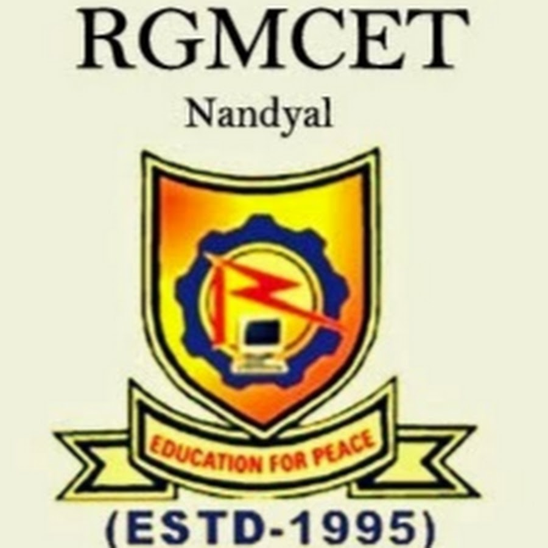

RGMCET encourges a lot of outside-the-curriculum activities to keep the students motivated and drive them towards success
Rajeev Gandhi Memorial College of Engineering and Technology was founded in the year 1995. It is located in a 32.04 acre sprawling campus on NH-40 (old NH-18) at Nandyal, , Andhra Pradesh.